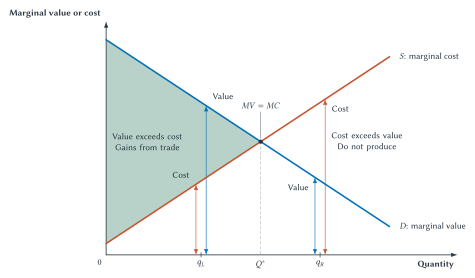
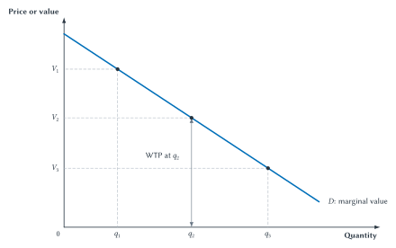
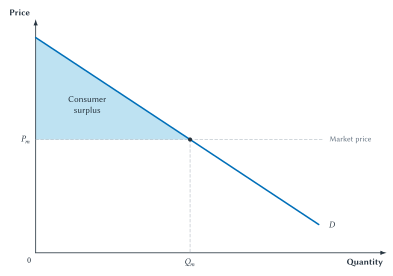
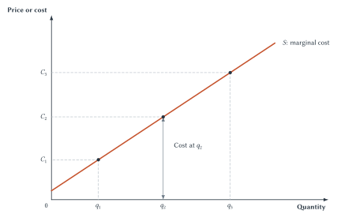
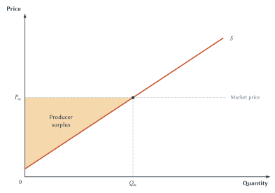
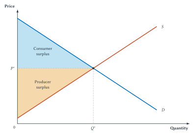
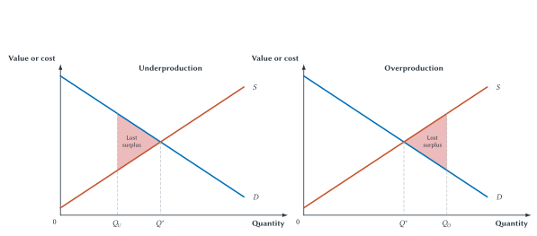

Chapter 6
Consumer Surplus, Producer Surplus, and Market Efficiency
Consumer surplus and producer surplus measure gains from trade and show when a competitive market realizes the available value from exchange.

Imagine that a buyer values a used item at $50. A seller can provide it at a cost of $30. If they agree on a price of $40, the buyer gains because the item is worth $10 more to her than she pays. The seller gains because the price is $10 more than his cost. Both sides voluntarily agree because both expect to be better off.
The buyer’s willingness to pay (WTP) is the highest amount she would pay rather than go without the item. In this example, her WTP is $50. Calling that amount the buyer’s value will let us compare it directly with the seller’s cost.
That simple trade contains the central idea of this chapter. Exchange can create gains when a good moves from someone who values it less to someone who values it more, or when a seller can produce something for less than a buyer thinks it is worth. The price decides how the gain is divided. The difference between the buyer’s value and the seller’s cost determines the size of the total gain.
Economists use welfare economics to study how choices and market outcomes affect people’s economic well-being. In this setting, the word welfare means well-being. It does not refer specifically to a government assistance program.
The graphs and shaded areas in this chapter all grow out of the same question: are there possible trades for which buyer value exceeds seller cost? Consumer surplus measures the buyer’s part of the gain. Producer surplus measures the seller’s part. Total surplus adds the two.
A Trade Both Sides Want
Begin with the $50 buyer value and the $30 seller cost. Several prices could make the trade possible.
| Buyer Value | Seller Cost | Price | Consumer Surplus | Producer Surplus | Total Surplus |
|---|---|---|---|---|---|
| $50 | $30 | $40 | $10 | $10 | $20 |
| $50 | $30 | $35 | $15 | $5 | $20 |
| $50 | $30 | $45 | $5 | $15 | $20 |
Table 6.1. Price divides the gains from trade. Every price in the table leaves both sides better off. A lower price gives more of the gain to the buyer; a higher price gives more to the seller. Total surplus remains $20 because buyer value minus seller cost remains $20.
The first row is easy to read. The buyer was willing to pay $50 but paid only $40, so consumer surplus is $10:
\[ CS=WTP-\text{price} \]
The seller received $40 for something that cost $30 to provide, so producer surplus is also $10:
\[ PS=\text{price}-\text{seller cost} \]
When we add the two sides, the price cancels. Using shorter labels, total surplus is:
\[ TS=CS+PS \]
For one trade, that becomes:
\[ TS=\text{buyer value}-\text{seller cost} \]
This is why changing the price from $35 to $45 changes who gets the gain but not how much gain the trade creates. The money paid by the buyer is received by the seller. It transfers surplus from one side to the other. The trade creates a total gain because the buyer values the item more than the seller’s cost.
Quick Concept
Gains From Trade
A trade creates total surplus when the buyer’s value exceeds the seller’s cost. Price usually divides that gain between the buyer and seller.
Historical Note
Smith, Friedman, And Voluntary Exchange
Milton and Rose Friedman described one of Adam Smith’s central insights in a simple way: voluntary exchange takes place because both sides believe they will benefit.1
That does not mean every choice is perfectly informed or every market works well. It means that voluntary agreement gives us a starting point for understanding value. The buyer and seller know details about their own needs, alternatives, and costs that no outsider can completely observe. When rights are secure and promises can be trusted, exchange lets people use that local knowledge to find gains from cooperation.
Smith’s invisible hand is therefore not magic. It describes how many people, each making separate choices, can produce a coordinated result. The rest of this chapter develops tools for measuring the gains that result.
One trade is easy to analyze. A market may contain thousands of buyers and sellers, each with a different value or cost. Demand and supply let us add those separate possibilities together.
Demand As Value
Chapter 3 introduced a demand curve as a relationship between price and quantity demanded. For welfare analysis, we read the same curve in another direction. Pick a quantity and move upward to the demand curve. The curve’s height shows the value buyers place on the marginal unit.
Recall that willingness to pay is the highest amount a buyer would pay for a unit rather than go without it. Economists also call this a buyer’s reservation price. For example, a buyer willing to pay as much as $50 will buy at $45 but not at $55.
The word marginal means one more. The marginal buyer is the buyer of the next unit, and the marginal value is that buyer’s willingness to pay for it. As quantity expands, the market usually reaches buyers with lower willingness to pay. That is why the demand curve slopes downward.
Figure 6.1 makes the vertical reading clear. At \(q_1\), buyers place the higher value \(V_1\) on the marginal unit. At \(q_2\), the value is \(V_2\). At \(q_3\), it is \(V_3\). The vertical arrow at \(q_2\) is important: willingness to pay is the height of the curve, not merely the dot on the line.

Figure 6.1. Demand can be read as a willingness-to-pay curve. At each quantity, the height of demand shows the value buyers place on the marginal unit (the next unit).
The demand curve does not claim that every buyer has the same value. It arranges possible units from higher willingness to pay to lower willingness to pay. A high-value buyer is willing to purchase even at a relatively high price. A lower-value buyer enters only at a lower price.
This interpretation turns the law of demand into a tool for measuring buyer gains. Once a market price is known, compare that price with the curve’s height.
Consumer Surplus
Suppose the market price is \(P_m\). Buyers represented by points above that price purchase because their willingness to pay exceeds what they must give up. The difference is their consumer surplus.
A buyer willing to pay $50 for a good priced at $40 receives $10 in consumer surplus. A buyer willing to pay exactly $40 receives no consumer surplus but may still buy. A buyer willing to pay only $35 will not buy at $40.
Figure 6.2 adds these gains across all units purchased. The blue area lies below demand because demand shows willingness to pay. It lies above the market-price line because buyers actually pay \(P_m\). Its width ends at \(Q_m\), the quantity buyers purchase at that price.

Figure 6.2. Consumer surplus adds buyers’ gains. For every unit up to \(Q_m\), the height of demand shows willingness to pay and the price line shows what the buyer pays.
Consumer surplus is measured in dollars. It is not a quantity of the good. For each unit, it measures a value difference in dollars; the shaded area adds those differences.
When a straight demand curve and a horizontal price line form a triangle, its area can be calculated with the familiar formula:
\[ \text{Area of a triangle}=\frac{1}{2}\times\text{base}\times\text{height} \]
Here, the base is the quantity purchased. The height is the difference between the highest willingness to pay shown on the demand curve and the market price. The formula is useful, but the meaning comes first. The triangle is consumer surplus because it adds the gap between buyer value and price for every unit purchased.
Key Point
Consumer Surplus Is A Gain, Not Just An Area
Consumer surplus is the difference between what buyers are willing to pay and what they actually pay, added across all the units purchased. The shaded area is a picture of those gains.
Economists often use choice as evidence about value. If someone voluntarily buys a good for $40 when other options are available, that choice suggests the good is worth at least $40 to that person. This idea is called revealed preference: choices reveal information about what people prefer.2 It is a useful starting point, though deception, coercion, or severe impairment can make a choice weaker evidence of well-being.
Buyer gains are only half of the market. To measure the seller side, we read supply vertically in the same way.
Supply As Cost
Chapter 3 introduced supply as the relationship between price and the quantity sellers are willing and able to offer. For welfare analysis, the height of supply at a quantity represents the cost of providing the marginal unit.
The word cost includes opportunity cost. It is the value of the labor, materials, equipment, time, and other resources used to provide the unit. It also includes what those resources could have produced elsewhere. Cost is not limited to a bill that an accountant records.
A seller’s willingness to accept is the lowest amount the seller would accept to provide or give up a unit. In a simple competitive supply model, that minimum amount reflects the seller’s cost. A seller with a cost of $30 is willing to sell at $40 but not at $20.
As production expands, higher-cost units usually enter. A restaurant may first serve additional lunches using available tables and staff, then need overtime, extra equipment, or less convenient inputs. The supply curve slopes upward because the cost of the marginal unit rises in the model.
Figure 6.3 shows this vertical reading. At \(q_1\), the marginal unit costs \(C_1\). At \(q_2\), it costs \(C_2\). At \(q_3\), it costs \(C_3\). The arrow at \(q_2\) measures the height of the supply curve.

Figure 6.3. Supply can be read as a cost curve. At each quantity, the height of supply shows the cost of producing the marginal unit.
Just as demand arranges buyers from higher value to lower value, supply arranges possible units from lower cost to higher cost. Lower-cost sellers are willing to supply at lower prices. Higher-cost sellers require a higher price before supplying.
Once a market price is known, compare the price with the supply curve’s height to find seller gains.
Producer Surplus
At a market price of \(P_m\), sellers whose costs lie below the price are willing to supply. The difference between the price and a seller’s cost is producer surplus.
A seller who receives $40 for a unit that costs $30 to provide receives $10 in producer surplus. A seller whose cost is exactly $40 receives no producer surplus on that unit but may still supply it. A seller with a cost above $40 will not supply at that price.
Figure 6.4 adds these gains across the units sold. The orange area lies below the market-price line because sellers receive \(P_m\). It lies above supply because the supply curve shows seller cost. It ends at \(Q_m\), the quantity supplied at the market price.

Figure 6.4. Producer surplus adds sellers’ gains. For every unit up to \(Q_m\), the price line shows what sellers receive and the height of supply shows their cost.
For straight lines, the same triangle formula can calculate the area. Again, the formula is secondary. The area represents a sum of price-minus-cost differences.
Producer surplus is closely related to profit, but the two are not always identical. Producer surplus subtracts the costs represented by the supply curve. A complete profit calculation may also subtract fixed costs that do not change with current output. Chapter 13 develops those cost distinctions. For now, treat producer surplus as the seller’s gain relative to the minimum amount needed to supply the units.
Sideline
Does Value Depend On Which Question We Ask?
For many ordinary market purchases, the distinction between willingness to pay and willingness to accept does not change the basic surplus analysis. Sometimes, however, it matters a great deal.
Suppose a college student who is a lifelong Buffalo Bills fan wins a ticket to see the Bills play in the Super Bowl. Before winning, the most the student would have paid for a ticket might have been limited by a college budget. Once the ticket belongs to the student, however, giving up that rare experience may require a much larger offer.
Willingness to pay asks how much the student would give up to acquire the ticket. Willingness to accept asks how much compensation the student would require to give up a ticket already owned. Those two amounts need not be equal, especially when substitutes are limited or the item matters greatly to the person.3
The difference does not automatically mean the student is irrational, nor does it make the surplus diagrams useless. It means that the starting assignment of ownership can affect which valuation question is appropriate. This becomes important when Chapter 10 studies property rights and compensation.
We now have a measure for each side of a trade. Putting demand and supply on the same graph lets us ask whether the market realizes all of the possible gains.
Putting The Two Sides Together
In a competitive market, the equilibrium price is \(P^*\) and the equilibrium quantity is \(Q^*\). Figure 6.5 combines the two surplus areas.
Buyers who value the good more than \(P^*\) purchase it and receive consumer surplus. Sellers whose costs are below \(P^*\) produce it and receive producer surplus. The two shaded areas together are total surplus.

Figure 6.5. Total surplus at competitive equilibrium. Consumer surplus and producer surplus together measure the gains from all trades up to \(Q^*\).
The price line divides the total area, but notice what determines the area’s outer boundaries. Demand shows buyer value. Supply shows seller cost. Total surplus is therefore the area between demand and supply for the units traded.
For a single unit, total surplus equals buyer value minus seller cost. For the market, total surplus adds that value-minus-cost difference across all units traded. The graph is the many-unit version of Table 6.1.
Key Point
Welfare Economics Measures Gains From Trade
Consumer surplus measures buyer gains, producer surplus measures seller gains, and total surplus adds them. The market creates gains when goods are provided at a cost below the value buyers place on them.
The equilibrium graph shows the amount of surplus created. It does not yet prove that no other quantity could create more. For that, we compare value and cost one unit at a time.
The Efficient Quantity
An outcome is efficient when it realizes the available gains from trade and avoids using resources for units that cost more than they are worth to buyers. In this chapter’s model, the efficient quantity maximizes total surplus.
Figure 6.6 removes the price line so we can focus directly on value and cost. To the left of \(Q^*\), demand lies above supply. The value of each additional unit exceeds its cost. Producing and trading that unit increases total surplus.
To the right of \(Q^*\), supply lies above demand. The cost of an additional unit exceeds its value. Producing that unit would use resources worth more elsewhere than the unit is worth to buyers.
Figure 6.6. The efficient quantity includes every unit whose value exceeds its cost. To the left of \(Q^*\), producing more creates gains from trade. To the right, producing more would reduce total surplus.
The point where the curves cross is special because the ordering reverses there. At \(Q^*\), the value of the marginal unit equals its cost. Before that point, more output raises total surplus. Beyond it, more output lowers total surplus.
This is the same marginal reasoning introduced in Chapter 1. Continue an activity while the added benefit exceeds the added cost. Stop when one more unit would cost more than it is worth. In the market model, separate choices by buyers and sellers lead to the same quantity.
Could an ideal central planner choose a better quantity? A planner who knew every buyer’s value and every seller’s cost could reproduce \(Q^*\). But no other quantity could produce more total surplus under the model. A lower quantity would leave some valuable trades undone; a higher quantity would create units whose cost exceeds their value.
The real informational problem is harder. Values and costs are spread across many people. Buyers know how much another unit matters to them. Sellers know details about their own workers, equipment, materials, and alternatives. Market prices help coordinate those separate pieces of knowledge without requiring one person to collect all of them first.
Quick Concept
The Right Amount
Produce a unit when its value to buyers exceeds its cost to sellers. Do not produce it when its cost exceeds its value. The efficient quantity is where those two heights meet.
Too Little And Too Much
Once \(Q^*\) is the comparison point, we can see two different mistakes.
With underproduction, the actual quantity is below \(Q^*\). Some units are not produced even though buyers value them more than they would cost. Mutually beneficial trades are lost.
With overproduction, the actual quantity is above \(Q^*\). Some units are produced even though their cost exceeds buyer value. Resources are used for something worth less than what those resources could have produced elsewhere.
Figure 6.7 shows both cases. In each panel, the red triangle measures surplus that is lost compared with the efficient outcome.

Figure 6.7. Quantities below or above \(Q^*\) lose surplus. Underproduction blocks beneficial trades; overproduction uses resources for units whose cost exceeds their value.
Later chapters often call this lost area deadweight loss. The phrase sounds technical, but the idea is simple: some of the gains available at the efficient outcome have disappeared. The loss is not merely a transfer from buyers to sellers or from sellers to the government. It represents mutually beneficial trades that do not occur, or costly units that should not have been produced.
The benchmark also explains why economists care about changes in quantity. A high price by itself is not a deadweight loss. Price may transfer surplus between groups. The efficiency loss occurs when the quantity or allocation changes in a way that reduces the value created by exchange.
What Competitive Markets Accomplish
The figures in this chapter support three broad conclusions about competitive markets:
- Goods tend to go to the buyers who value them most highly. These are the buyers with the greatest willingness to pay.
- Production tends to come from sellers who can produce at lower cost. At a common market price, lower-cost sellers can supply profitably when higher-cost sellers cannot.
- The market produces the quantity that maximizes consumer surplus plus producer surplus. It includes units whose value exceeds their cost and excludes units whose cost exceeds their value.
The first two conclusions concern who buys and who produces. The third concerns how much is produced. Together, they explain why a competitive market does more than make quantity supplied equal quantity demanded. It coordinates many separate choices in a way that tends to maximize total surplus.
Suppose a perfectly informed and benevolent social planner knew every buyer’s willingness to pay and every seller’s cost. Under the model, the planner could reproduce the market outcome, but could not create more total surplus. In the language of Chapter 2, the planner’s best efficiency strategy would be to allow Smith’s butcher, brewer, and baker to make their own choices and respond to market prices.
Key Point
Three Efficiency Results
Competitive markets tend to direct goods toward higher-value buyers, production toward lower-cost sellers, and total output toward the quantity that maximizes consumer surplus plus producer surplus.
Efficiency And Equity: The Economic Pie
Efficiency concerns the size of the economic pie. It asks whether the available gains from trade have been created. Equity concerns how the pie is divided among people.
A large pie does not guarantee that every slice is fair. An efficient outcome can still produce a distribution that many people consider unequal or unjust. Total surplus cannot decide how income, goods, or opportunities ought to be distributed.
But the size of the pie still matters, even when equity is the main concern. Gains that are never created cannot be divided among anyone. A society with more value to distribute has more options for helping people than a society that has allowed those gains to disappear.
Changing how the pie is divided can also change its size. A policy may alter incentives to work, produce, invest, or trade. That does not prove that every effort to change the distribution is unwise, or that every such policy has a large efficiency cost. It means that good analysis should ask both questions: how does the policy change the slices, and how does it change the size of the pie?
Sideline
Efficiency And Equity Ask Different Questions
Efficiency asks how much value is created. Equity asks how that value is distributed. A concern for equity does not make efficiency unimportant: only gains that are created can be shared.
Willingness to pay also needs one brief qualification. It depends partly on what a person values, but also on the resources that person has. A wealthy buyer may be willing to pay more for something that matters less to her than it matters to a low-income buyer.4
Common Mistake
Willingness To Pay Is Not The Same As Need
Willingness to pay is a useful monetary measure of value, but it is not a complete measure of need or well-being. That is one reason efficiency and equity must be considered separately.
When Markets Fall Short
The competitive result is a benchmark, not a claim that every real market works perfectly. Economists use market failure for a condition that prevents an unregulated market from maximizing total surplus.
The main sources will receive their own chapters later in the book:
- Market power: a seller or small group of sellers can restrict output or influence price. Chapters 15 through 17 examine monopoly and oligopoly.
- Externalities: a trade or production decision creates costs or benefits for people outside the market. Chapter 10 examines pollution and other external effects.
- Public goods, common resources, or poorly defined property rights: ordinary market exchange may not give people the right incentives to provide or conserve a resource. Chapter 11 develops these problems.
- Information problems: buyers, sellers, workers, insurers, or lenders may lack important information needed for well-informed exchange. Chapters 12 and 19 examine these cases.
These problems are real, but market failure should be demonstrated rather than merely asserted. A high price, an unpopular outcome, or an unequal distribution is not by itself proof that the market has failed to maximize total surplus. The analysis should identify the missing condition and explain how it blocks beneficial trades, encourages costly activity, or otherwise reduces surplus.
Common Mistake
A Market-Failure Claim Needs A Mechanism
To show market failure, identify what prevents the market from maximizing total surplus and trace the resulting loss. Finding a market failure also does not prove that any proposed policy will improve the outcome. The policy’s information, incentives, costs, and likely responses still matter.
A Benchmark For Policy
Absent a market failure, the competitive market maximizes total surplus under the model developed in this chapter. That result gives the next several chapters a comparison point.
Taxes, price controls, tariffs, externalities, and market power matter because they may change which trades occur and how much value is created. The basic question remains simple: compared with the competitive benchmark, are mutually beneficial trades lost, are costly units produced, or is surplus merely transferred from one group to another?
The benchmark does not predetermine every policy conclusion. It tells us what must be explained. Before changing a market outcome, identify the failure, document the mechanism, and compare the proposed policy with the realistic alternatives.
Chapter Study Map
Core Ideas
- A voluntary trade can benefit both sides when buyer value exceeds seller cost.
- Consumer surplus is willingness to pay minus price, added across buyers and units.
- Producer surplus is price minus seller cost, added across sellers and units.
- Total surplus equals consumer surplus plus producer surplus. For a unit traded, it equals buyer value minus seller cost.
- The height of demand measures the marginal unit’s value to buyers; the height of supply measures its cost to sellers.
- The efficient quantity includes units whose value exceeds cost and excludes units whose cost exceeds value.
- Competitive markets tend to direct goods toward higher-value buyers, production toward lower-cost sellers, and output toward the surplus-maximizing quantity.
- Efficiency concerns the size of the economic pie; equity concerns how the pie is divided.
- Market failure means a condition prevents an unregulated market from maximizing total surplus.
- A market-failure claim must identify a mechanism; a disliked outcome alone is not enough.
- Willingness to pay is useful for measuring value, but it is not the same as need.
Diagrams And Tables
- In Figures 6.1 and 6.3, read value and cost from the vertical height of the curve.
- In Figures 6.2 and 6.4, explain whose gains each shaded area represents and why.
- In Figure 6.5, show how consumer surplus and producer surplus combine into total surplus.
- In Figure 6.6, compare value and cost on each side of \(Q^*\).
- In Figure 6.7, explain why both underproduction and overproduction lose surplus.
A Complete Welfare Explanation
A strong explanation should:
- identify buyer value and seller cost
- explain why a trade does or does not create a gain
- separate the division of surplus from the amount of total surplus
- compare marginal value with marginal cost when evaluating quantity
- distinguish efficiency from distribution or fairness
- identify a market-failure mechanism before recommending a policy response
Common Mistakes
- Treating voluntary exchange as a zero-sum event in which one side can gain only if the other loses.
- Memorizing colored triangles without explaining the individual gains they add.
- Saying price creates total surplus. Price usually divides the gain; buyer value minus seller cost determines its total size.
- Reading demand height as quantity rather than value, or supply height as quantity rather than cost.
- Treating producer surplus as identical to accounting profit in every setting.
- Saying every market outcome is efficient, even when market power, externalities, public goods, or information problems are present.
- Calling an outcome a market failure without identifying how it prevents the market from maximizing total surplus.
- Treating efficiency as another word for fairness.
- Treating higher willingness to pay as proof of greater need.
Practice And Enrichment
No companion applet is required for this chapter. Practice should focus on explaining surplus areas in words, comparing value with cost, distinguishing efficiency from equity, and identifying the mechanism behind a claimed market failure.
Study And Learn
Research Brief: Prohibition And Gains From Trade
From 1920 until 1933, the Eighteenth Amendment and the Volstead Act prohibited the legal manufacture, sale, and transportation of most alcoholic beverages in the United States. The Twenty-first Amendment later repealed national Prohibition.5
Write a short research brief that uses this chapter’s economic framework to answer the following questions:
- Suppose an informed adult buyer and seller would both voluntarily agree to an alcohol transaction. What gains from trade did Prohibition prevent?
- Did alcohol markets satisfy all the conditions behind the competitive-efficiency benchmark? Investigate possible costs imposed on other people, addiction or severe impairment, incomplete information, and any other relevant problem. Do not merely list them; explain how each could weaken the benchmark.
- Prohibition may have reduced some alcohol consumption and alcohol-related harm. What other consequences followed from moving production and exchange into illegal markets? Consider enforcement costs, product quality, violence, corruption, and lost tax revenue.
- Why was Prohibition repealed? Separate evidence about its effects from changes in public opinion and political conditions.
- What is your final judgment? Could alcohol consumption create genuine social costs while nationwide Prohibition still performed worse than a regulated legal market? Explain which evidence would make your conclusion stronger or weaker.
Begin with the National Archives’ documents and historical overview, then use at least one scholarly source. Jeffrey Miron and Jeffrey Zwiebel’s study of alcohol consumption during Prohibition is one useful starting point.6 The assignment does not have a required political conclusion. It asks whether you can identify gains from trade, test the assumptions behind the market benchmark, and compare the full consequences of alternative rules.
Review Questions
- Why can a voluntary trade benefit both the buyer and the seller?
- Define welfare economics as the term is used in this chapter.
- Define willingness to pay and reservation price.
- How can a demand curve be read as a marginal-value curve?
- Define consumer surplus for one transaction and for a market.
- How can a supply curve be read as a marginal-cost curve?
- Define producer surplus. Why is it not always identical to accounting profit?
- Explain why changing price can change the division of surplus without changing total surplus from one trade.
- Define total surplus.
- Why should units to the left of \(Q^*\) be produced?
- Why should units to the right of \(Q^*\) not be produced?
- What is lost when a market underproduces? What is lost when it overproduces?
- What three broad efficiency results follow from the competitive-market model?
- How do competitive prices tend to direct goods toward higher-value buyers and production toward lower-cost sellers?
- What is the difference between efficiency and equity?
- Why does the size of the economic pie still matter when equity is the main concern?
- Define market failure and name its four main sources discussed in this chapter.
- Why must a market-failure claim identify a mechanism rather than merely point to an unpopular outcome?
Economic Reasoning Questions
- Maya values a used desk at $120. Jordan’s cost of giving it up is $70. They trade at $90. Calculate consumer surplus, producer surplus, and total surplus. What changes if the price is $100?
- A market price falls while the same units continue to be traded and buyer values and seller costs do not change. Explain what happens to the division of surplus and to total surplus.
- A student points to the shaded consumer-surplus triangle and says, “That area is valuable because it is blue.” Give the economic explanation the student should provide instead.
- At the current quantity, buyers value one more unit at $35 and sellers can produce it for $22. Should the unit be produced? Explain the change in total surplus.
- At another quantity, one more unit costs $60 to produce and buyers value it at $45. Should it be produced? What is the surplus effect if it is?
- A policy reduces output below \(Q^*\). Explain why the lost-surplus area lies between demand and supply over the units no longer traded.
- A hospital allocates a scarce medicine to the patients with the highest willingness to pay. Explain why this may satisfy a narrow surplus measure yet still raise serious equity and need questions.
- A factory’s supply curve records its private production costs but pollution harms nearby residents. Identify the market-failure mechanism and explain why the market quantity may not maximize total surplus.
- Someone claims that high concert-ticket prices prove market failure. What additional mechanism or evidence would be needed before that conclusion follows?
- A government agency has complete information about buyer values and seller costs. Could it reproduce the competitive quantity? Could it create more total surplus under the chapter’s model? Explain.
Source Notes
Milton Friedman and Rose Friedman, Free to Choose: A Personal Statement (1980), Chapter 1, “The Power of the Market,” section “The Role of Prices.” An Occidental College reproduction contains the relevant discussion. The chapter paraphrases rather than quotes the passage.↩︎
Paul A. Samuelson, “A Note on the Pure Theory of Consumer’s Behaviour”, Economica 5, no. 17 (1938): 61-71. The chapter uses the revealed-preference idea without its formal consumer-theory machinery.↩︎
John K. Horowitz and Kenneth E. McConnell, “A Review of WTA/WTP Studies”, Journal of Environmental Economics and Management 44, no. 3 (2002): 426-447; and U.S. Environmental Protection Agency, Guidelines for Preparing Economic Analyses, 3rd ed.. The text uses only the conceptual distinction and reports no single empirical ratio.↩︎
U.S. Environmental Protection Agency, Guidelines for Preparing Economic Analyses, 3rd ed., especially Chapters 7 and 9. The guidance uses willingness to pay as a monetary welfare measure while treating distributional analysis separately.↩︎
U.S. National Archives, “The Volstead Act” and “Spirited Republic: Alcohol’s Evolving Role in U.S. History”. The Eighteenth Amendment prohibited manufacture, sale, transportation, importation, and exportation; it did not simply make drinking itself a federal constitutional offense.↩︎
Jeffrey A. Miron and Jeffrey Zwiebel, “Alcohol Consumption During Prohibition”, American Economic Review 81, no. 2 (1991): 242-247. Historical consumption must be estimated indirectly because reliable direct data for an illegal market are limited.↩︎